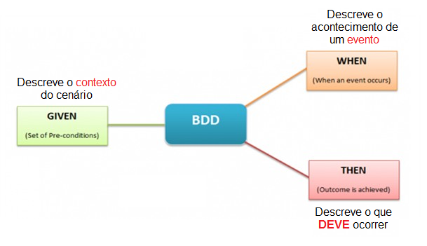
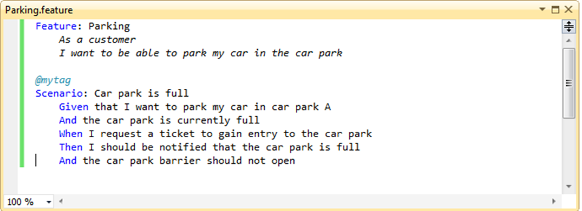
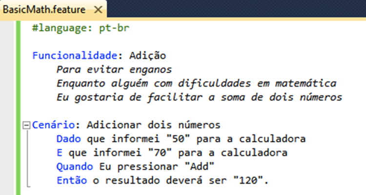
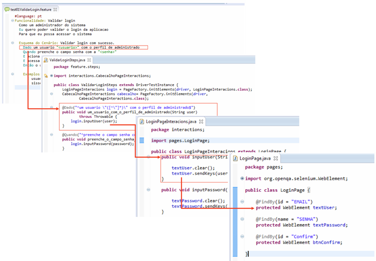
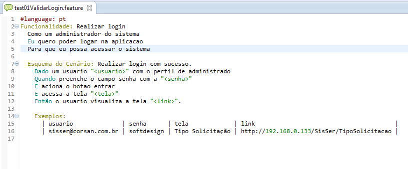
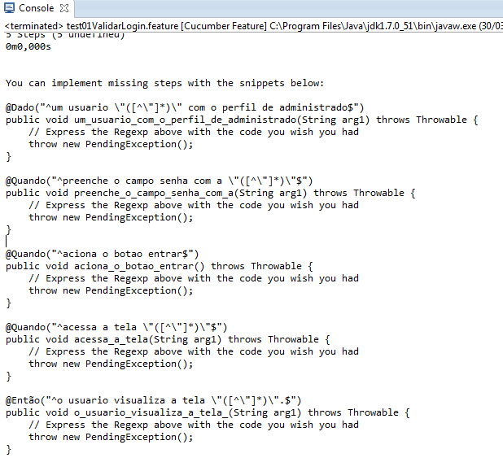
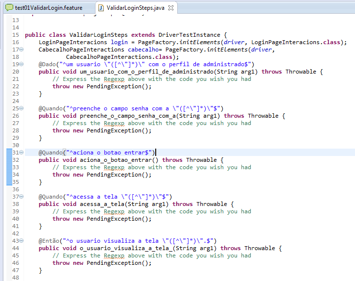
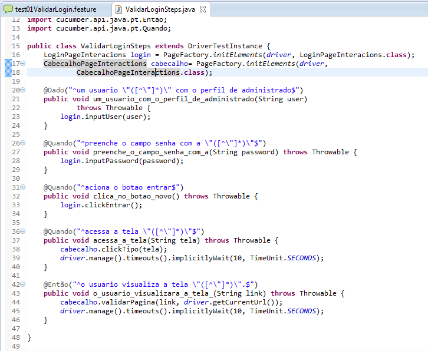
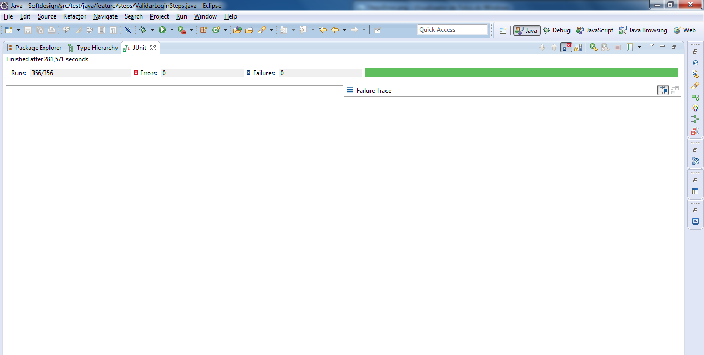

Let’s go learn about BDD
Criado por Raphael Rodrigues e Yalis Couto
Sintaxe de Gherkin
Cenário 1: Estacionamento
Cenário 2: Adição
Cucumber
Cucumber
É uma ferramenta de comunicação onde você pode expressar exemplos em uma linguagem que qualquer um pode ler; Cucumber não é uma ferramenta só para executar testes de aceitação; Foi desenvolvido para fornecer uma abordagem mais eficiente e com melhor compreensão de todos os envolvidos por trabalhar com exemplos em forma de cenários para a especificação dos requisitos; Não interage diretamente com a aplicação de software; Cucumber funciona em Ruby, Java, .NET ou aplicações web escritas em qualquer linguagem.Cucumber-JVM é uma implementação Cucumber para as mais propulares linguagens JVM, como:
Java Groovy Scala Clojure Jython JRuby Rhino JavaScript GosuNo caso, nós utilizaremos um pluggin do Cucumber no Eclipse, e utilizaremos Java.
Cucumber em Português
Para configurar a Feature basta adicionar # language: pt no início do arquivo! Com isso ele reconhece as palavras reservadas. Mais informações sobre as palavras reservadas são encontradas no Guia Prático – Selenium.Case Corsan
Visão Geral
Feature
Saída do Console
Classe sem implementação
Observe falhar

Classe com implementação
Observe passar
Cucumber Report
Feature Result - Passed
Feature Result - Failed